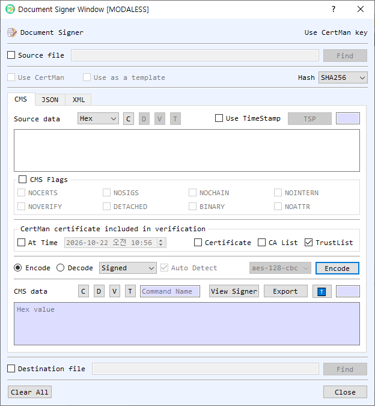

Document Signer Dialog Guide
The Document Signer handles document signatures, verification, encryption, and data containers in CMS, JSON/JWS, and XML formats. It can work with text in the dialog or read and write source and destination files.

Figure 1. Document Signer on the CMS tab in Encode mode. The JSON and XML tabs provide their own signing, verification, and encryption workflows.
Shared Controls
- Source file / Find — Enable Source file to read the operation's input from a file. Find selects the file; a destination-file control at the bottom can select where to save output. Files may also be dragged into the dialog.
- Use CertMan / Use CertMan key — Select whether to use key material from CertMan or, where available, KeyPairMan. The label indicates the active key source.
- Use as a template — In XML workflows, use the supplied XML as a template for signing or encryption.
- Hash — Select the hash algorithm where applicable.
- Clear All / Close — Clear the dialog's input and output fields or close it.
CMS Tab
- Source data / CMS data — Enter the content or CMS message. Select the source representation (Hex, String, or Base64). C clears the field; V, D, and T view, decode, or identify CMS data where available.
- Use TimeStamp / TSP — Attach a timestamp to supported signing operations. TSP configures the timestamp authority/service.
- CMS Flags — Configure
NOVERIFY,NOCERTS,NOSIGS,NOCHAIN,NOINTERN,DETACHED,BINARY, andNOATTRfor supported operations. - Certificate included in verification — Configure At Time, Certificate, CA List, and TrustList for signed-message verification.
- Encode / Decode and command — Encode commands include Signed, Enveloped, Add Signed, Data, and Digest. Decode commands include Verify, Developed, GetData, and GetDigest. In Decode mode, Auto Detect dispatches based on the CMS type.
- CMS data / Source data output — Displays the created CMS message or processed content. View Signer inspects signer information; Export saves the output. The up-arrow copies output into the source field.
Create or Process CMS Data
- Select Encode or Decode and enter source data or load a file.
- Select a command. Signed creates signed data; Enveloped encrypts content for a recipient; Add Signed adds a signer; Data wraps data; Digest creates digested data.
- For signing or encryption, select the appropriate certificate/key. Choose the hash or cipher when enabled. Set timestamp and verification options as needed.
- Select Encode or Decode. In Decode mode, leave Auto Detect on to identify supported CMS types or turn it off to choose a command.
- Review the output and use Export or the destination file option to save it.
JSON Tab (JWS)
The JSON tab works with a JSON payload and a JWS (JSON Web Signature) value. Enter or load the payload, then use Compute Signature to create a JWS or Verify Signature to validate one with the selected key. Check Object checks the JSON object. The payload and JWS controls provide view, clear, copy-to-input (up-arrow), and export actions.
XML Tab
The XML tab accepts an XML body as text or a source file. Use Check to validate the XML input. Select signing or encryption mode to switch the actions between Make / Verify and Encrypt / Decrypt. The result area displays the generated signature or encrypted XML; use its up-arrow to reuse the result as the next body. Use as a template controls template-based input for XML operations. Select Export to save the result.
Notes
- CMS encryption and decryption require a compatible recipient certificate and matching private key. Signing and verification require the appropriate signing key and certificate/trust settings.
- The Decode Auto Detect feature supports CMS Data, DigestedData, SignedData, and EnvelopedData.
- JSON signature operations require a compatible key and JWS algorithm. Verify that the key source matches the signing operation.
- XML signing and encryption require well-formed input; use Check before processing when needed.
- Protect private keys, passwords, and signed content. Verification outcomes depend on the selected certificate and trust configuration.